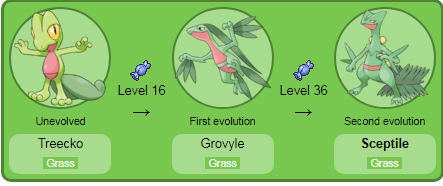
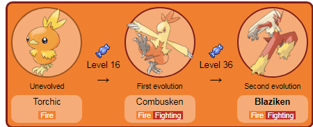
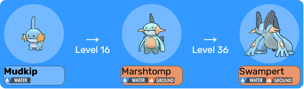

Aqui aprenderemos um pouco sobre a historia da região e alguns pokemons da area.
A região de Hoenn é uma área do mundo Pokémon.
É conhecida por seu clima mais próximo ao tropical
e sua geografia dividida: aproximadamente metade da região
é composta de terra, sendo a outra de mar.
Hoenn é inspirada na principal ilha japonesa do mundo real, Kyushu.
Os nomes da maioria das cidades em Hoenn
são formados por duas palavras juntas
("Pequena Raiz", "Árvore Forte", "Porto Ardósia", "Ever Grande", etc.)
ao invés de cores ou plantas, como foi feito em Kanto e Johto.
O Professor Birch, da cidade de Littleroot,
oferece os primeiros Pokémon parceiros, conhecidos como Treecko,
Torchic ou Mudkip, para os Treinadores que estão
começando sua jornada nesta vasta terra.
Hoenn foi criada após a formação de Primal Groudon e Primal Kyogre.
Primal Groudon elevou as massas de terra, enquanto Primal Kyogre preencheu os mares que mais tarde se tornariam Hoenn.
Um encontro entre esses dois provocou uma grande batalha pela supremacia, até que Mega Rayquaza interveio, enviando Primal Groudon e Primal Kyogre para cavernas onde descansaram até serem despertados muitos anos depois, durante os eventos da Geração III ou Geração VI.
O movimento dos continentes por Regigigas criou Hoenn, e quando Regigigas foi colocado para dormir no Templo Snowpoint em Sinnoh, Regirock, Registeel e Regice, as chaves para despertá-lo, foram seladas em Hoenn.
Na história contemporânea, Brendan/May se mudaram para Littleroot Town em Hoenn vindo de Johto.
Brendan/May encontrou May/Brendan, competindo para completar o Pokédex.
Brendan/May salvou o Professor Birch de um Poochyena com um Torchic, Mudkip ou Treecko da bolsa do Professor Birch; como recompensa por salvá-lo, ele deu a Brendan/May um Pokédex e permitiu que eles ficassem com o Pokémon que usaram para ajudá-lo.
Brendan/May viajaram por Hoenn, ocasionalmente encontrando e derrotando a Equipe Aqua e a Equipe Magma.
A Equipe Magma e/ou a Equipe Aqua conseguiram despertar Groudon e/ou Kyogre, o que causou à região de Hoenn um clima severo de luz solar intensa, chuvas pesadas ou uma estranha mistura de ambos.
No entanto, Brendan/May conseguiram acalmar o Pokémon do clima ao derrotá-lo ou ao convocar Rayquaza para acalmá-lo.
Brendan/May então prosseguiram para vencer a Liga Pokémon e se tornar o Campeão, sendo convidados a competir na Battle Frontier.
Após se tornarem Campeões, um meteoro mudou de curso em direção a Hoenn.
As Key Stones de May/Brendan, Wally e Archie / Maxie foram roubadas por Zinnia em uma tentativa de convocar Rayquaza para evitar a crise.
Brendan/May encontraram Zinnia na Sky Pillar e convocaram com sucesso Rayquaza.
Brendan/May deram a Rayquaza o poder de Mega Evoluir e ele destruiu o meteoro.
Treecko.
Treecko é um pequeno Pokémon reptiliano bípede e verde.
Ele possui olhos amarelos com pupilas longas e estreitas.
As mãos e os pés de Treecko têm três dedos cobertos por pequenas espinhos.
Esses espinhos permitem que ele escale paredes verticais com facilidade.
Seu estômago e garganta são vermelhos, e há uma linha atravessando seu estômago que se assemelha a um bolso.
Treecko tem uma cauda grande e verde escura com dois lóbulos separados, que usa para sentir a umidade.
Essa habilidade permite que ele preveja o tempo do dia seguinte.
Treecko é raramente encontrado na natureza e é mais comum em cativeiro.
No entanto, quando está na natureza, Treecko vive em florestas densas.
Ele faz seu lar em árvores altas e atacará qualquer um que se aproxime de seu ninho.
Devido à sua natureza territorial, é conhecido como o protetor das árvores da floresta.
Treecko é famoso por sua personalidade calma e serena.
Ele nunca entra em pânico sob quaisquer circunstâncias, mesmo quando enfrenta um oponente maior.
Recentemente, foi visto vivendo no Terrário da Blueberry Academy.
O pokémon possui duas evoluções chamadas respectivamente de Grovyle e Sceptile.

Torchic.

Torchic é um Pokémon do tipo Fogo, conhecido por ser o Pokémon inicial da região de Hoenn.
Ele se parece com um pequeno pintinho laranja e possui características adoráveis, como um bico pequeno e penas fofas.
Torchic é conhecido por sua personalidade animada e seu desejo de se tornar mais forte.
Evolução:
Torchic evolui para Combusken no nível 16.
Combusken é um Pokémon de tipo Fogo/Lutador, adquirindo uma aparência mais robusta e ágil.
Ele se destaca por suas habilidades em combate e pode usar uma variedade de ataques, incluindo movimentos de fogo e de luta.
Combusken evolui para Blaziken no nível 36.
Blaziken é um Pokémon poderoso, também do tipo Fogo/Lutador.
Ele é conhecido por sua velocidade e força em batalha, podendo realizar ataques de fogo intensos e golpes de luta impressionantes.
Blaziken é famoso por seu estilo de combate acrobático e é um favorito entre os treinadores.

Torchic.

Descrito como "Mud Fish Pokémon" ou Pokémon Peixe de Lama, Mudkip é um Pokémon quadrúpede.
É azul e possui três barbatanas nas guelras, chamativas e pontudas, na cor laranja.
Sua cabeça suporta uma espécie de "radar" para identificar as mudanças no ar e na água, e possivelmente avistar perigos.
Sua cauda ajuda a impulsionar a água enquanto nada, trazendo bastante velocidade.
Embaixo d'água, ele utiliza suas guelras laranjas para respirar.
É muito forte e, por isso, enfrenta grupos de Pokémon facilmente e domina seus adversários destemidamente.
Ele é conhecido por ser um Pokémon anfíbio e por viver tanto na água quanto no solo, especialmente na lama.
Mudkip dorme, enterrando-se na lama à beira da água para ficar entre os dois ambientes e equilibrar a temperatura do corpo.
Evolução.
No nivel 16,quando evolui para Marshtomp, Mudkip ganha o tipo Ground.
Ao invés de três barbatanas nas guelras, ele possui uma só, que é bem pontuda e fina.
Conhecidos por atirar lama no inimigo, os Marshtomp são Pokémon protetores.
Vivem em pântanos, brejos e áreas alagadiças, e geralmente odeiam rios e lugares com água corrente.
Como estratégia de sobrevivência, ficam escondidos na lama e submergem quando o inimigo menos espera.
Em japonês, seu nome é "ヌマクロー" (Numacraw), que é uma mistura de 沼 "numa" (pântano) e ムツゴロウ "crawl" (rastejar).
Logo, temos algo como "O que rasteja no pântano".
Já em inglês, temos Marshtomp, que é uma combinação de "marsh" (marisma), que é um ambiente úmido, e "stomp" (pisar).
Logo, temos algo adaptado como "O que pisa no Marisma", como um Pokémon que habita os marismas.
Em seu último estágio evolutivo, Mudkip se torna Swampert, um Pokémon com aparência bruta e feroz.
Swampert volta a ter três barbatanas nas guelras e ganha novamente a mesma coloração de Mudkip.
Possui visão aguçada, que permite enxergar bem até em águas lamaçentas.
Swampert ainda tem a habilidade de prever quando uma tempestade se aproxima usando seu "radar" e suas barbatanas.
Em japonês, temos "ラグラージ" (Laglarge), que é uma combinação de "lagoon" (laguna ou charco), referindo-se à água, e "large" (largo, grande).
Logo, temos algo como "O do charco grande", como um Pokémon que habita grandes charcos.
Já no inglês, temos Swampert, que é uma mistura de "swamp" (pântano, brejo) e "expert" (perito, experiente).
Logo, temos algo como "Perito do Pântano".
